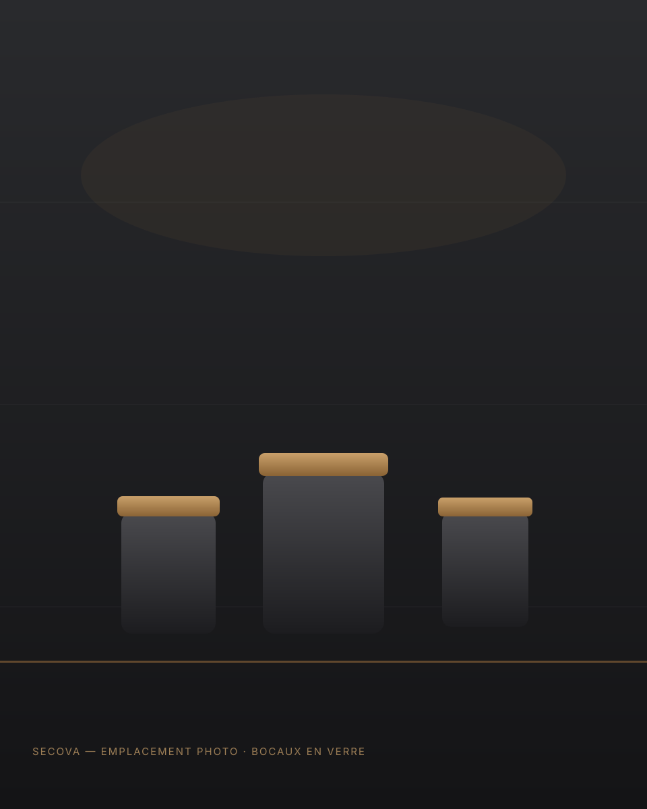

Des bocaux et pots en verre pour l'agroalimentaire
Confiture, sauces, condiments, miel, conserves, produits gastronomiques : SECOVA vous accompagne dans le choix des capacités, des capsules et des conditionnements adaptés à votre production.
Des bocaux pour tous les produits alimentaires
Chaque produit conditionné impose ses propres contraintes de conservation, de fermeture et de présentation en linéaire.

Formats standards ou personnalisés
Pots à confiture
Formats classiques ou identitaires, ouvertures adaptées aux capsules twist-off, valorisation du produit en linéaire.
Sauces & condiments
Bocaux adaptés aux process de remplissage à chaud, résistance thermique et compatibilité avec les lignes de stérilisation.
Bocaux à miel
Formats mettant en valeur la texture et la couleur du produit, ouvertures larges facilitant le service.
Bocaux de conserve
Contenants répondant aux exigences de conservation longue durée et de résistance à la stérilisation.
Produits gastronomiques
Formats premium pour les produits élaborés, avec attention portée à la présentation et à la finition.
Formats personnalisés
Développement de capacités ou de formes spécifiques pour les projets sortant des références standards.

Un accompagnement jusqu'au conditionnement palette
Au-delà du choix du bocal, SECOVA accompagne ses clients sur l'ensemble des paramètres liés au conditionnement.
- Choix de la capacité adaptée au produit et au marché visé
- Sélection du type de capsule (twist-off, à vide, autres systèmes)
- Compatibilité avec vos lignes de remplissage et de sertissage
- Organisation du conditionnement en palettes selon vos contraintes logistiques
Un besoin en bocaux à étudier ?
Parlez-nous de votre produit et de vos volumes : nous vous proposons une solution adaptée.